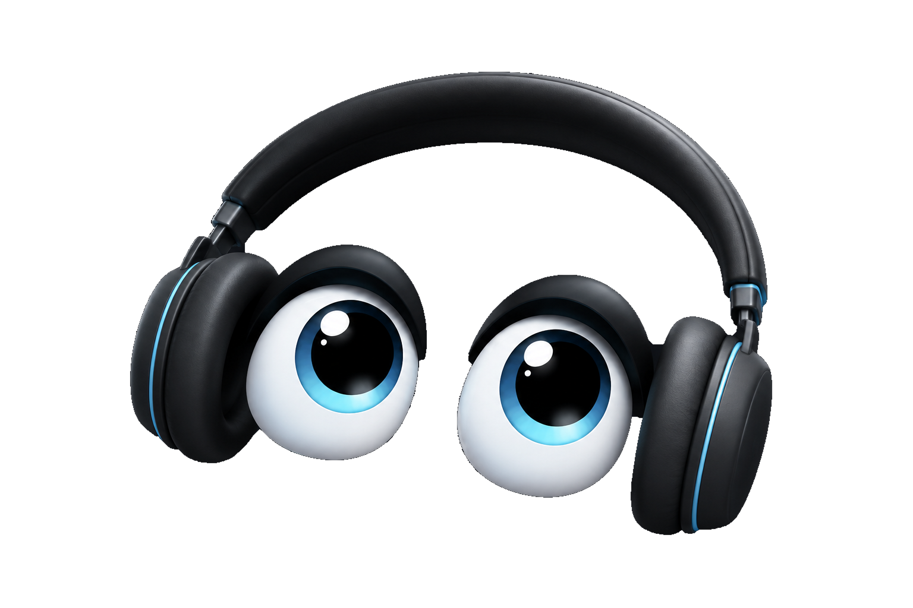

Current prototype
Wall / tablet
A room-facing BOOP body for voice, glanceable information and local Home Assistant control.
Prototyped on Android phone and tablet hardware.
Local first. Human in charge.
A smart-home and media puppet that lives in the human world with us. BOOP turns useful machinery into something you can look at, talk to and understand, without pretending the puppet is a person.
No account here. No tracking here. No cookie theatre.
The actual BOOP eyes. No website redesign.
01 · Meet BOOP
BOOP is the visible performance of useful machinery. The eyes show attention. The voice gives the house a mouth. The hands let the puppet point at the world.
That leaves room for charm without lying about what is underneath. Home Assistant remains the local smart-home authority. BOOP adds a friendlier way to reach it, plus media control, conversation and puppetry where those make sense.
“Show the performance first. Show the strings when they are useful.”
02 · One BOOP, different bodies
Today those bodies are prototypes built from hardware that already exists. Same project, different room.
A room-facing BOOP body for voice, glanceable information and local Home Assistant control.
Prototyped on Android phone and tablet hardware.
BOOP can live on a normal handset, including a minimal launcher body and notification presentation.
The phone is a useful body, not a tiny prison for the project.
A sofa-friendly BOOP body with remote-first controls, media puppetry and smart-home access.
Big targets. D-pad friendly. No touch screen required.
03 · What BOOP does
BOOP uses devices exposed through Home Assistant instead of building a second smart-home database. Basic house control is designed to stay useful without cloud chat.
Room-aware control is a safety feature as much as a convenience. BOOP should not silently grab a same-named device somewhere else.
Current TV work explores playback control, now-playing presentation and BOOP puppetry without turning the living room into another settings maze.
Voice and wake-name work are part of the real prototypes. Natural voice remains unresolved after physical testing, so BOOP keeps the working Android speech path while that experiment continues.
BOOP can mirror notification cues while Android remains the authority for the original notification and its tap/dismiss behaviour.
The eyes, hands, movement and timing are there to make machinery readable and enjoyable, not to manufacture emotional dependence.
BOOP + media
The Shield work treats media as a place for puppetry: BOOP can react to playback and occupy the screen without needing to become the thing you are watching.

04 · Open compatibility
Not “Made for a walled garden.” Not “buy the matching light bulb.” If Home Assistant exposes a device to BOOP, the ambition is that BOOP can work with it.
Works FOR BOOP is a compatibility idea for normal devices, makers and accessories. It is not a claim that any company shown elsewhere has partnered with BOOP.
05 · Privacy with visible strings
Home Assistant remains the house brain for local control. BOOP does not need to duplicate your rooms and devices into another proprietary cloud.
The current Android architecture deliberately keeps one controller-owned microphone stream rather than stacking competing listeners.
Longer-term BOOP hardware explores deliberately obvious privacy controls: things you can see, hear and physically understand.
06 · Built for the human world
Big controls. Clear focus. Remote navigation. Plain English. BOOP should meet people where they are instead of inventing an “easy mode” and quietly making it worse.
The yellow hands also point toward a bigger ambition: first-class sign-language interaction, including BSL and ASL, using an interface that can show where attention is and whether the puppet can actually see the signer.
Sign-language interaction is a design ambition, not a finished shipping feature.
07 · Future bodies
These are Concept directions, not products for sale. They exist to keep the physical BOOP destination visible while the useful bits are proved on real devices.
A dedicated room body: non-touch-first, glanceable and expressive, with the eyes doing the social work.
A small portable speaker body with visible privacy theatre and a face that can survive the human world.
The original destination: a cute, ownable, rolling smart speaker with physical manners and repairable hardware.
Room for brands, small makers, kids and tinkerers to add things without BOOP demanding ownership of the entire ecosystem.
08 · The workshop
BOOP is being built in public through prototypes, source code, physical device tests and a slightly unreasonable number of experiments. Green automated tests are useful. A real device still gets the final vote.
No automatic “latest APK” button here. A build can be CI-green and still be waiting for physical acceptance.
Useful. Open. Ownable.
Still BOOP.